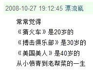
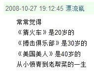

2011年06月28日
http://www.xiami.com/song/1768937356
2011年06月26日
n天里回顾了《灾难》，《家园1》，《家园2》。
呃，，1>c>2~
呃，，1>c>2~
2011年06月24日
这最后些日子里感觉比较废，然后废着废着觉得就废了太久了
下学期看看能不能矜守住别浪费太多时间
下学期看看能不能矜守住别浪费太多时间
2011年06月23日
看了个电视剧，《裸婚时代》
我NM没劲儿多说了,fuck life
我NM没劲儿多说了,fuck life
2011年06月12日
《唐山大地震》，不过不失，还不错；趁去douban前把这写下，免得吐槽看多第一观感被变了
2011年06月12日
douban上看着的一些评论使这本书(三体III)饱满了，，但。。。需要外挂才能饱满的书实在称不上是好书啊。。。打了3分(douban评分)
2011年06月11日
douban,你实在是太有才了，你比天天向上都好看啊
2011年06月11日
三体III完，只能说，大刘啊，你把那些个好创意糟蹋了啊。。。。。。。。。。。。。。。。。。
2011年06月10日
《三体III》看了一点，暂时还很不错；
比较担忧的是，已然如此铺开的场子大刘能驾驭个仍然不错的收场么？
比较担忧的是，已然如此铺开的场子大刘能驾驭个仍然不错的收场么？
2011年06月09日
http://tieba.baidu.com/f?kz=923704086
我表示：哎呦。。
我表示：哎呦。。
2011年06月09日
black swan again..非常好，是的...非常好..
2011年06月03日
http://blog.sina.com.cn/s/blog_595aef730100rlrl.html
2011年06月02日
http://www.xiami.com/song/1940640
2011年05月29日
《关云长》
我了个妈的，看国产烂片配douban影评实在是太欢乐了
我了个妈的，看国产烂片配douban影评实在是太欢乐了
2011年05月23日
http://www.xiami.com/song/2090906
2011年05月13日
http://www.xiami.com/song/3365289
2011年05月11日
数学搞到很纠结..............
2011年05月09日
《Matrix》(整个三部曲)真是非常好的影片——不是说它本身有多好，尽管好几个方面来说也确实很不错了——而是，，它能给人很多思考，如果你有足够的背景去消化的话
2011年05月08日
you don't know how beautiful it is... i mean pixies
2011年05月04日
douban上偶尔听Dolores O'Riordan觉得跟cranberries好像，，今儿一xiami发现是cranberries主唱。。。囧
纪录片
http://www.simplecd.org/id/82549
http://www.simplecd.org/id/84084
http://www.simplecd.org/id/84084
2011年04月27日
http://www.xiami.com/song/1017554
日记
9:21 2011/4/25
学Windows编程主要是学图形编程——为了图形化表示从而帮助理解数据结构与算法；这算比较功利的，足够的话只普通GDI就成，没必要到DirectX、OpenGL之类。
程序设计最重要的是本质的思想，而非枝叶上的炫耀。
遇到每个问题都独立思考是有益的——但可能并非性价比最高的；更靠谱的应该是尽早站到巨人的肩膀上，然后我们去探索那些未知的区域。
这样才有可能在有生之年做出些不囿于世俗价值的东西。
学Windows编程主要是学图形编程——为了图形化表示从而帮助理解数据结构与算法；这算比较功利的，足够的话只普通GDI就成，没必要到DirectX、OpenGL之类。
程序设计最重要的是本质的思想，而非枝叶上的炫耀。
遇到每个问题都独立思考是有益的——但可能并非性价比最高的；更靠谱的应该是尽早站到巨人的肩膀上，然后我们去探索那些未知的区域。
这样才有可能在有生之年做出些不囿于世俗价值的东西。
2011年04月22日
狼王这又消失。。
2011年04月21日
http://www.xiami.com/song/showcollect/id/3875716
2011年04月20日
没歌听。。后摇我实在听不出劲；这几天听窦唯后期的那些有点意思，但又不能老那么轻着
毷氉啊
毷氉啊
2011年04月13日
MD这sina怎么动不动删人评论？再加上广告越来越多。。。我TM都想换了
2011年04月11日
看《C Primer Plus》确实有收获；呃，加上一些google
操作系统的神秘性些许减少——加上自己的饥渴些许增加~ 哈
哎，每天脑子用得好多。。
操作系统的神秘性些许减少——加上自己的饥渴些许增加~ 哈
哎，每天脑子用得好多。。
2011年04月11日
http://www.xiami.com/album/417678
2011年04月10日
fuck那些2B的音乐；
我他妈听何勇去
我他妈听何勇去
2011年04月09日
http://www.xiami.com/song/2342493
只提供第一感觉。。过后没劲了不说
只提供第一感觉。。过后没劲了不说
2011年04月09日
初听惘闻，好像不错
2011年04月06日
张悬的《亲爱的我还不知道》总是跟《A Fire Upon The Deep》联系在一起，，怪
因为某次的那时候通宵看《深渊》的背景音乐是这个。。
因为某次的那时候通宵看《深渊》的背景音乐是这个。。
2011年04月06日
一听isolation就不停地想到annik... she said: "you are so depressing..."
我这又有点fall in了
《control》绝没有那些人说的那样差
我这又有点fall in了
《control》绝没有那些人说的那样差
2011年04月05日
JD的歌越来越好听
2011年04月05日
那次听得很high的那张专辑竟然是beatles的《love》!
2011年04月05日
No Love Lost的前奏真NB
2011年04月04日
关于“这个世界背后的层面”：
设想你用一个386的电脑玩魔兽世界，你会感到卡得不行——但游戏中的人物不会有这种感觉，因为他们的世界中任何变化都是同步卡顿同步进行的(时间是由变化定义的)。扩展到我们的世界也是一样的。
但注意以上设想有个前提是“意识是由物质变化产生的”——这个前提不一定成立。
设想你用一个386的电脑玩魔兽世界，你会感到卡得不行——但游戏中的人物不会有这种感觉，因为他们的世界中任何变化都是同步卡顿同步进行的(时间是由变化定义的)。扩展到我们的世界也是一样的。
但注意以上设想有个前提是“意识是由物质变化产生的”——这个前提不一定成立。
2011年04月03日
慢慢对数论有兴趣了，
这是个好迹象，因为它蕴含着(哈哈)对数学有兴趣了
记得王小波说过如果把他扔到荒岛上只能带一本书的话他就带本数学题？
这是个好迹象，因为它蕴含着(哈哈)对数学有兴趣了
记得王小波说过如果把他扔到荒岛上只能带一本书的话他就带本数学题？
2011年04月02日
http://www.xiami.com/song/showcollect/id/4238998
2011年04月01日
自己骨子里还是个人英雄主义
i really wonder 有人能明白我说的是什么吗？
i really wonder 有人能明白我说的是什么吗？
2011年03月30日
http://blog.solrex.org/articles/apue-a-great-book.html
just a mark
just a mark
狼王来听这个!
http://www.xiami.com/song/1768920052
2011年03月26日
《American Beauty》片尾曲是Beatles的because
呃。。我说这个干毛

我三十了？
http://movie.douban.com/review/1845985/
这个不错；带评论
呃。。我说这个干毛

我三十了？
http://movie.douban.com/review/1845985/
这个不错；带评论